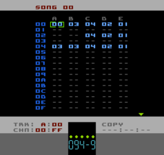

Song Editor Page
The Song is the main structure for your tune. The 5 columns labelled A, B, C, D and E are the individual Tracks of the Song and represent the 5 hardware voices of the NES.
A = Square 1B = Square 2C = TriangleD = NoiseE = DCM (1-bit samples)If you need to know the capabilities of each of the NES's hardware voices then here's a good reference NES Audio
The Song contains only Chain numbers and each Track plays downwards, independently of (but at the same speed as) the other Tracks.
Wherever you have an empty cell in the Song "--" playback will loop back to where the Track was started from. When you play the Song, if there are any Tracks with empty cells
on the row that your cursor is on, that Track won't play.
At all times during playback, little green arrows beside each Track column will show the current playback position of that Track.